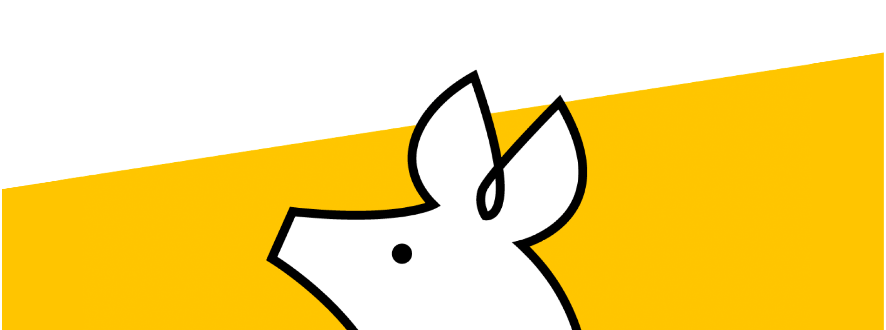
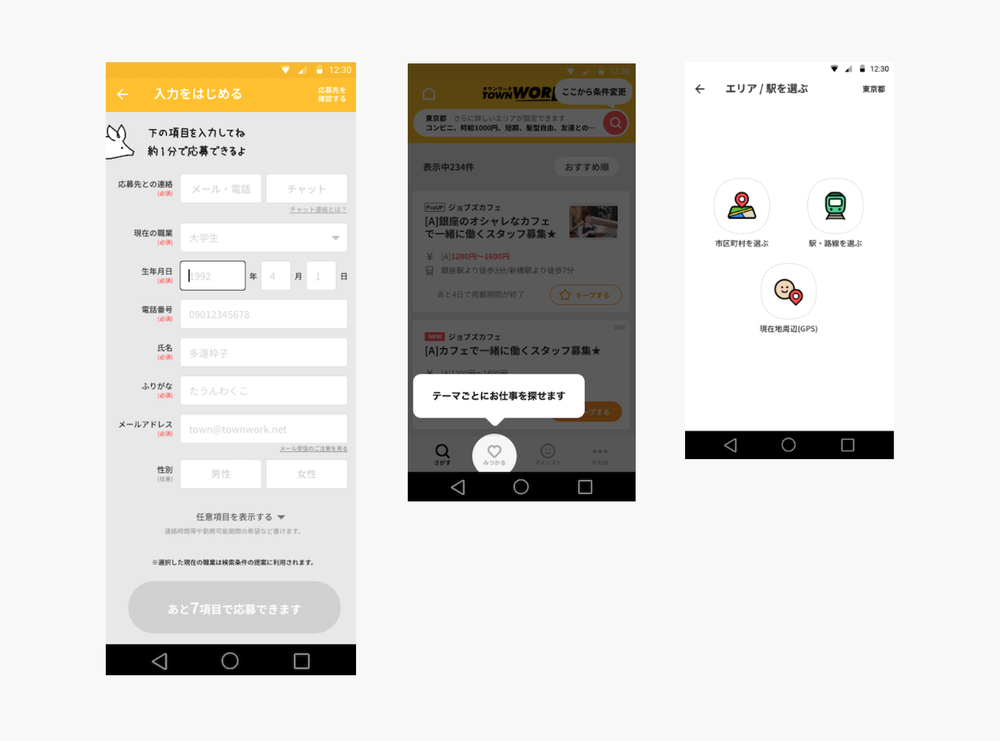

2021


・オンボーディングとは
オンボーディングの目的を言語化し、弊社の現状の課題を整理
・メンターとは
メンターの役割を可視化し、課題の整理、適正特徴を検討
・新しい方が入られた際にすること
互いのスキルセットを知る
・自己開示のきっかけを提示する
・顔見知りになる機会を増やす
・目的
リモート環境下ではサービスをまたいだコミュニケーションは発生しずらい。そのため、帰属意識なども根付きずらい。ワークショップではメンバー間での自己開示を促し、コミュニケーションを活性化させるきっかけを提示する
・方法
wevox values cardを用いて、「仕事において大切にしていること」をテーマに参加者同士で雑談を交えて議論をしてもらう